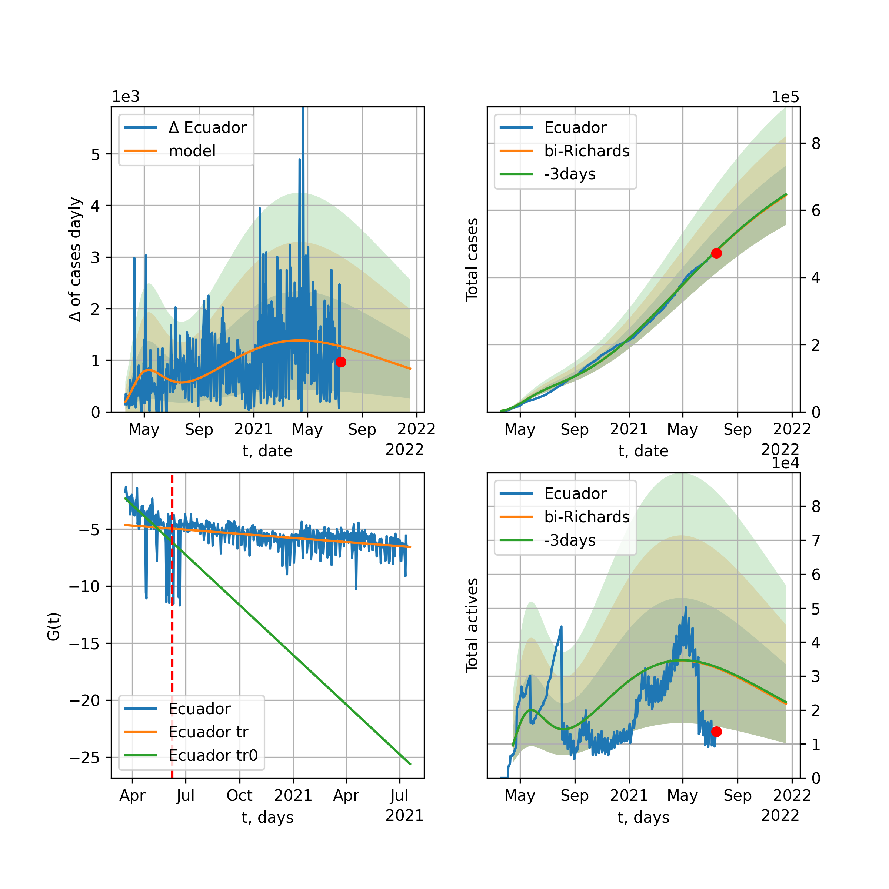
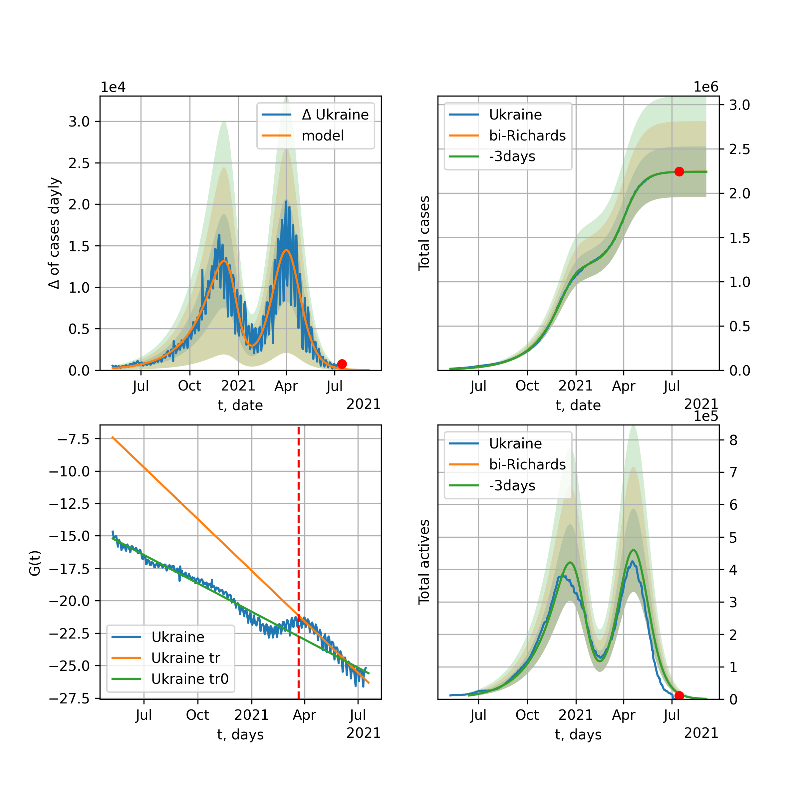

Multi-logistic model of COVID-19 dynamics
Model, code, results
Project maintained by algmaknick Hosted on GitHub Pages — Theme by mattgraham
World

World data at: 2020-11-18
+3 day model MAPE: 0.000387
model: bi-Richards
coeffs: [1.80292484e+07 1.08569236e+00 1.68640051e+02 4.17705082e-02]
rational stdev: 0.177912
forecast at the end of period: +665 days
deltaDaycases: 2650
total cases: 118280889 ± 21043608
total death: 2832455 ± 1511784
bi-Richards approximation splitting point: 200
actives k: 28
trend coefficient of determination: 0.816975
intercept: -3.412851
slope: -0.011512
trend coefficient of determination: 0.208064
intercept: -6.433210
slope: 0.004890
European Union

European Union data at: 2020-11-18
+3 day model MAPE: 0.028257
model: bi-Richards
coeffs: [8.85821521e+06 4.13897489e-02 2.52262388e+02 5.62616576e+00]
rational stdev: 0.240852
forecast at the end of period: +108 days
deltaDaycases: 1
total cases: 10329261 ± 2487820
total death: 237138 ± 171345
bi-Richards approximation splitting point: 200
actives k: 26
trend coefficient of determination: 0.535816
intercept: -68.331806
slope: -0.119565
trend coefficient of determination: 0.956024
intercept: -60.206465
slope: -0.128913
Brazil

Brazil data at: 2020-11-18
+3 day model MAPE: 0.001121
model: bi-Richards
coeffs: [-6.02759110e+04 1.47916370e+00 1.82546004e+02 1.20978535e-01]
rational stdev: 0.262078
forecast at the end of period: +255 days
deltaDaycases: 223
total cases: 6754624 ± 1770236
total death: 190230 ± 149565
bi-Richards approximation splitting point: 205
actives k: 17
trend coefficient of determination: 0.653143
intercept: -2.751525
slope: -0.020743
trend coefficient of determination: 0.074833
intercept: -5.494807
slope: -0.007898
Russia

Russia data at: 2020-11-18
+3 day model MAPE: 0.001689
model: bi-Richards
coeffs: [2.84758067e+06 6.68511302e-01 6.14527772e+01 3.10748142e-02]
rational stdev: 0.179312
forecast at the end of period: +325 days
deltaDaycases: 83
total cases: 3977303 ± 713178
total death: 68767 ± 36992
bi-Richards approximation splitting point: 200
actives k: 26
trend coefficient of determination: 0.731575
intercept: -3.062875
slope: -0.015922
trend coefficient of determination: 0.014636
intercept: -5.240760
slope: 0.001457
USA

USA data at: 2020-11-18
+3 day model MAPE: 0.006142
model: bi-Richards
coeffs: [-6.50044791e+05 2.59463810e-01 1.76594172e+02 8.05884534e-01]
rational stdev: 0.284510
forecast at the end of period: +668 days
deltaDaycases: 806
total cases: 22405013 ± 6374444
total death: 483545 ± 412719
bi-Richards approximation splitting point: 155
actives k: 52
trend coefficient of determination: 0.702154
intercept: -10.798219
slope: -0.048826
trend coefficient of determination: 0.002831
intercept: -17.527445
slope: -0.000487
Spain

Spain data at: 2020-11-18
+3 day model MAPE: 0.007385
model: bi-Richards
coeffs: [2.71304460e+06 1.31184609e+00 2.20371629e+00 1.32885703e-02]
rational stdev: 0.263766
forecast at the end of period: +465 days
deltaDaycases: 12
total cases: 3139612 ± 828121
total death: 85568 ± 67709
bi-Richards approximation splitting point: 200
actives k: 35
trend coefficient of determination: 0.156657
intercept: -3.924295
slope: -0.011110
trend coefficient of determination: 0.032468
intercept: -3.436364
slope: -0.004893
Italy

Italy data at: 2020-11-18
+3 day model MAPE: 0.029262
model: bi-Richards
coeffs: [1.13550559e+06 6.49701175e-02 2.58363006e+02 3.70149528e+00]
rational stdev: 0.160132
forecast at the end of period: +80 days
deltaDaycases: 0
total cases: 1385323 ± 221834
total death: 51409 ± 24696
bi-Richards approximation splitting point: 200
actives k: 35
trend coefficient of determination: 0.534501
intercept: -40.276898
slope: -0.085113
trend coefficient of determination: 0.572703
intercept: -41.524159
slope: -0.046939
United Kingdom

United Kingdom data at: 2020-11-18
+3 day model MAPE: 0.005162
model: bi-Richards
coeffs: [1.86182619e+06 1.03751074e-01 2.11261836e+02 4.02984745e-01]
rational stdev: 0.207214
forecast at the end of period: +185 days
deltaDaycases: 20
total cases: 2184768 ± 452715
total death: 81373 ± 50584
bi-Richards approximation splitting point: 200
actives k: 35
trend coefficient of determination: 0.625762
intercept: -6.645720
slope: -0.027039
trend coefficient of determination: 0.298049
intercept: -6.758807
slope: -0.011299
France

France data at: 2020-11-18
+3 day model MAPE: 0.032024
model: bi-Richards
coeffs: [1.90834057e+06 3.54218293e-02 2.49583085e+02 1.09273418e+01]
rational stdev: 0.098469
forecast at the end of period: +150 days
deltaDaycases: 0
total cases: 2050881 ± 201947
total death: 46375 ± 13699
bi-Richards approximation splitting point: 95
actives k: 105
trend coefficient of determination: 0.739298
intercept: -85.817355
slope: -0.708990
trend coefficient of determination: 0.863905
intercept: -115.701076
slope: -0.160405
Germany

Germany data at: 2020-11-18
+3 day model MAPE: 0.025324
model: bi-Richards
coeffs: [6.66551771e+05 5.09685248e-02 2.45630245e+02 5.81934475e+00]
rational stdev: 0.207588
forecast at the end of period: +59 days
deltaDaycases: 0
total cases: 891532 ± 185071
total death: 14076 ± 8766
bi-Richards approximation splitting point: 210
actives k: 17
trend coefficient of determination: 0.457162
intercept: -65.831034
slope: -0.078751
trend coefficient of determination: 0.910929
intercept: -50.957077
slope: -0.124907
Turkey

Turkey data at: 2020-11-18
+3 day model MAPE: 0.009457
model: bi-Richards
coeffs: [ 3.59403619e+05 1.49940290e+00 -9.51511003e+01 9.89049335e-03]
rational stdev: 0.258952
forecast at the end of period: +171 days
deltaDaycases: 262
total cases: 566200 ± 146618
total death: 15723 ± 12214
bi-Richards approximation splitting point: 150
actives k: 17
trend coefficient of determination: 0.758656
intercept: -1.967897
slope: -0.030303
trend coefficient of determination: 0.263199
intercept: -5.830901
slope: 0.002541
Iran

Iran data at: 2020-11-18
+3 day model MAPE: 0.006411
model: bi-Richards
coeffs: [6.70248949e+06 1.80827317e-01 1.72378744e+02 7.75992920e-02]
rational stdev: 0.261691
forecast at the end of period: +409 days
deltaDaycases: 1071
total cases: 7233504 ± 1892943
total death: 387350 ± 304098
bi-Richards approximation splitting point: 200
actives k: 17
trend coefficient of determination: 0.758134
intercept: -2.850995
slope: -0.019733
trend coefficient of determination: 0.756505
intercept: -8.925150
slope: 0.013686
Canada

Canada data at: 2020-11-18
+3 day model MAPE: 0.008140
model: bi-Richards
coeffs: [1.27780450e+06 4.22086170e-01 3.46094814e+01 3.03499180e-02]
rational stdev: 0.247960
forecast at the end of period: +311 days
deltaDaycases: 585
total cases: 1353195 ± 335538
total death: 48654 ± 36192
bi-Richards approximation splitting point: 200
actives k: 17
trend coefficient of determination: 0.775402
intercept: -2.341524
slope: -0.024080
trend coefficient of determination: 0.391379
intercept: -7.136701
slope: 0.010227
South Africa

South Africa data at: 2020-11-18
+3 day model MAPE: 0.002914
model: bi-Richards
coeffs: [1.44394192e+05 4.24470258e+00 7.26365678e+01 7.82498389e-03]
rational stdev: 0.295768
forecast at the end of period: +45 days
deltaDaycases: 356
total cases: 783892 ± 231850
total death: 21282 ± 18883
bi-Richards approximation splitting point: 200
actives k: 17
trend coefficient of determination: 0.700134
intercept: -1.693706
slope: -0.019463
trend coefficient of determination: 0.026851
intercept: -6.854915
slope: 0.002811
Belgium

Belgium data at: 2020-11-18
+3 day model MAPE: 0.016645
model: bi-Richards
coeffs: [4.67974281e+05 6.22307182e-02 2.34912928e+02 4.70238443e+00]
rational stdev: 0.179873
forecast at the end of period: +45 days
deltaDaycases: 0
total cases: 533924 ± 96038
total death: 14698 ± 7931
bi-Richards approximation splitting point: 170
actives k: 35
trend coefficient of determination: 0.559669
intercept: -43.456478
slope: -0.119691
trend coefficient of determination: 0.797769
intercept: -38.212412
slope: -0.107124
Peru

Peru data at: 2020-11-18
+3 day model MAPE: 0.002294
model: bi-Richards
coeffs: [5.90257859e+05 3.87321942e+00 1.76302424e+01 8.61606311e-03]
rational stdev: 0.251270
forecast at the end of period: +45 days
deltaDaycases: 235
total cases: 951752 ± 239146
total death: 35770 ± 26963
bi-Richards approximation splitting point: 110
actives k: 21
trend coefficient of determination: 0.799742
intercept: -1.447667
slope: -0.026609
trend coefficient of determination: 0.760319
intercept: -2.382020
slope: -0.014885
Netherlands

Netherlands data at: 2020-11-18
+3 day model MAPE: 0.017041
model: bi-Richards
coeffs: [4.20802340e+05 4.97427146e-02 2.32965546e+02 2.96588603e+00]
rational stdev: 0.084817
forecast at the end of period: +45 days
deltaDaycases: 3
total cases: 471020 ± 39950
total death: 8875 ± 2258
bi-Richards approximation splitting point: 150
actives k: 35
trend coefficient of determination: 0.647259
intercept: -28.340201
slope: -0.091185
trend coefficient of determination: 0.834935
intercept: -27.683590
slope: -0.056840
India

India data at: 2020-11-18
+3 day model MAPE: 0.000911
model: bi-Richards
coeffs: [6.27727594e+06 9.49939606e-02 1.48333756e+02 3.46505154e-01]
rational stdev: 0.223416
forecast at the end of period: +325 days
deltaDaycases: 108
total cases: 10472505 ± 2339725
total death: 153858 ± 103123
bi-Richards approximation splitting point: 92
actives k: 11
trend coefficient of determination: 0.903860
intercept: -3.644904
slope: -0.047743
trend coefficient of determination: 0.977079
intercept: -5.440955
slope: -0.021599
Switzerland

Switzerland data at: 2020-11-18
+3 day model MAPE: 0.027955
model: bi-Richards
coeffs: [2.49547743e+05 6.94105434e-02 2.41056430e+02 3.41509602e+00]
rational stdev: 0.195723
forecast at the end of period: +45 days
deltaDaycases: 0
total cases: 285790 ± 55935
total death: 3833 ± 2250
bi-Richards approximation splitting point: 205
actives k: 17
trend coefficient of determination: 0.360165
intercept: -35.353951
slope: -0.044429
trend coefficient of determination: 0.819914
intercept: -17.525091
slope: -0.112204
Ecuador

Ecuador data at: 2020-11-18
+3 day model MAPE: 0.001324
model: bi-Richards
coeffs: [ 1.67475742e+05 1.17265537e+00 -7.77668207e+01 1.43197257e-02]
rational stdev: 0.080947
forecast at the end of period: +185 days
deltaDaycases: 45
total cases: 229659 ± 18590
total death: 16447 ± 3994
bi-Richards approximation splitting point: 80
actives k: 26
trend coefficient of determination: 0.275268
intercept: -2.255088
slope: -0.047502
trend coefficient of determination: 0.029626
intercept: -4.498155
slope: -0.003909
Portugal

Portugal data at: 2020-11-18
+3 day model MAPE: 0.026299
model: bi-Richards
coeffs: [2.34617293e+05 4.82025421e-02 2.46710025e+02 4.11366364e+00]
rational stdev: 0.214193
forecast at the end of period: +45 days
deltaDaycases: 11
total cases: 292787 ± 62712
total death: 4505 ± 2894
bi-Richards approximation splitting point: 170
actives k: 22
trend coefficient of determination: 0.627170
intercept: -37.606838
slope: -0.097282
trend coefficient of determination: 0.809200
intercept: -41.285308
slope: -0.048330
Saudi Arabia

Saudi Arabia data at: 2020-11-18
+3 day model MAPE: 0.000511
model: bi-Richards
coeffs: [3.18219557e+04 2.81357596e+00 3.54696439e+01 9.00122000e-03]
rational stdev: 0.228316
forecast at the end of period: +45 days
deltaDaycases: 142
total cases: 363944 ± 83094
total death: 5866 ± 4017
bi-Richards approximation splitting point: 200
actives k: 17
trend coefficient of determination: 0.970598
intercept: -1.767234
slope: -0.024462
trend coefficient of determination: 0.227288
intercept: -5.824409
slope: -0.004759
Sweden

Sweden data at: 2020-11-18
+3 day model MAPE: 0.051198
model: bi-Richards
coeffs: [1.14565300e+05 6.36848576e-02 2.57685957e+02 7.34812071e+00]
rational stdev: 0.263803
forecast at the end of period: +80 days
deltaDaycases: 0
total cases: 202379 ± 53388
total death: 6511 ± 5152
bi-Richards approximation splitting point: 200
actives k: 35
trend coefficient of determination: 0.694184
intercept: -52.513342
slope: -0.241394
trend coefficient of determination: 0.659728
intercept: -79.006249
slope: -0.047926
Pakistan

Pakistan data at: 2020-11-18
+3 day model MAPE: 0.009931
model: bi-Richards
coeffs: [ 5.86919600e+05 6.99314428e-01 -1.39277817e+02 1.29421016e-02]
rational stdev: 0.277654
forecast at the end of period: +171 days
deltaDaycases: 1530
total cases: 660947 ± 183515
total death: 13091 ± 10904
bi-Richards approximation splitting point: 170
actives k: 26
trend coefficient of determination: 0.749732
intercept: -1.654720
slope: -0.023719
trend coefficient of determination: 0.582891
intercept: -9.174173
slope: 0.013320
Ireland

Ireland data at: 2020-11-18
+3 day model MAPE: 0.011384
model: bi-Richards
coeffs: [4.23429659e+04 4.97382150e-02 2.27707520e+02 3.00848197e+00]
rational stdev: 0.604690
forecast at the end of period: +45 days
deltaDaycases: 0
total cases: 68519 ± 41433
total death: 1990 ± 3610
bi-Richards approximation splitting point: 170
actives k: 35
trend coefficient of determination: 0.601262
intercept: -24.909817
slope: -0.102670
trend coefficient of determination: 0.530938
intercept: -30.688150
slope: -0.028829
Mexico

Mexico data at: 2020-11-18
+3 day model MAPE: 0.000608
model: bi-Richards
coeffs: [2.29852902e+05 3.55908334e+00 1.10197514e+02 1.10166755e-02]
rational stdev: 0.255209
forecast at the end of period: +115 days
deltaDaycases: 255
total cases: 1178129 ± 300668
total death: 115515 ± 88441
bi-Richards approximation splitting point: 200
actives k: 17
trend coefficient of determination: 0.946093
intercept: -1.723940
slope: -0.018578
trend coefficient of determination: 0.149460
intercept: -3.262123
slope: -0.008925
Singapore

Singapore data at: 2020-11-18
+3 day model MAPE: 0.000660
model: bi-Richards
coeffs: [3.98357053e+04 1.52799283e-01 6.48222928e+01 1.86388284e-01]
rational stdev: 0.370983
forecast at the end of period: +45 days
deltaDaycases: 2
total cases: 58974 ± 21878
total death: 28 ± 31
bi-Richards approximation splitting point: 80
actives k: 26
trend coefficient of determination: 0.143155
intercept: -3.108944
slope: -0.016946
trend coefficient of determination: 0.862903
intercept: -1.702102
slope: -0.034074
Chile

Chile data at: 2020-11-18
+3 day model MAPE: 0.002375
model: bi-Richards
coeffs: [1.75088713e+05 2.88325941e+00 2.35748192e+01 9.28652363e-03]
S.Korea scenario coeffs: [0.36242246, 2.56241634, 1.84890887, 0.13324732]
rational stdev: 0.676554
forecast at the end of period: +45 days
deltaDaycases: 315
total cases: 555682 ± 375949
total death: 15485 ± 31429
bi-Richards approximation splitting point: 170
actives k: 10
trend coefficient of determination: 0.912746
intercept: -1.417770
slope: -0.025301
trend coefficient of determination: 0.520165
intercept: -4.196571
slope: -0.007603
Israel

Israel data at: 2020-11-18
+3 day model MAPE: 0.001688
model: bi-Richards
coeffs: [1.01654605e+05 4.08243941e-01 1.79889965e+02 3.36320339e-01]
rational stdev: 0.371017
forecast at the end of period: +24 days
deltaDaycases: 37
total cases: 324063 ± 120232
total death: 2719 ± 3026
bi-Richards approximation splitting point: 185
actives k: 11
trend coefficient of determination: 0.127625
intercept: -6.582270
slope: -0.010492
trend coefficient of determination: 0.799981
intercept: 3.301303
slope: -0.058392
Austria

Austria data at: 2020-11-18
+3 day model MAPE: 0.012297
model: bi-Richards
coeffs: [1.81017912e+05 6.77735911e-02 2.44008537e+02 5.85998229e+00]
rational stdev: 0.254742
forecast at the end of period: +605 days
deltaDaycases: 3
total cases: 960046 ± 244564
total death: 8895 ± 6797
bi-Richards approximation splitting point: 210
actives k: 22
trend coefficient of determination: 0.444438
intercept: -54.353611
slope: -0.068738
trend coefficient of determination: 0.940212
intercept: -25.673584
slope: -0.194964
Belarus

Belarus data at: 2020-11-18
+3 day model MAPE: 0.001958
model: bi-Richards
coeffs: [2.36953648e+05 6.26031907e-01 3.56741647e+01 2.63776070e-02]
rational stdev: 0.096135
forecast at the end of period: +255 days
deltaDaycases: 96
total cases: 303524 ± 29179
total death: 2744 ± 791
bi-Richards approximation splitting point: 200
actives k: 21
trend coefficient of determination: 0.690620
intercept: -2.829322
slope: -0.021854
trend coefficient of determination: 0.652571
intercept: -7.279742
slope: 0.010708
Japan

Japan data at: 2020-11-18
+3 day model MAPE: 0.021119
model: bi-Richards
coeffs: [ 8.30156820e+04 5.32366718e+00 -8.85710856e+01 5.18804745e-03]
rational stdev: 0.058700
forecast at the end of period: +17 days
deltaDaycases: 221
total cases: 111649 ± 6553
total death: 1767 ± 311
bi-Richards approximation splitting point: 170
actives k: 11
trend coefficient of determination: 0.085266
intercept: -5.372243
slope: 0.005166
trend coefficient of determination: 0.714279
intercept: -11.353864
slope: 0.034925
China

China data at: 2020-11-18
+3 day model MAPE: 0.000287
model: bi-Richards
coeffs: [ 5.25298162e+03 2.30595611e+00 -2.62725848e+02 5.39766512e-03]
rational stdev: 0.070976
forecast at the end of period: +45 days
deltaDaycases: 6
total cases: 86503 ± 6139
total death: 4640 ± 987
bi-Richards approximation splitting point: 110
actives k: 17
trend coefficient of determination: 0.820990
intercept: -2.007333
slope: -0.082728
trend coefficient of determination: 0.141186
intercept: -10.391904
slope: 0.007159
Qatar

Qatar data at: 2020-11-18
+3 day model MAPE: 0.001320
model: bi-Richards
coeffs: [ 3.16549245e+04 1.98921522e+00 -4.66565466e+01 1.03515218e-02]
S.Korea scenario coeffs: [0.36242246, 2.56241634, 1.84890887, 0.13324732]
rational stdev: 0.083136
forecast at the end of period: +45 days
deltaDaycases: 75
total cases: 140838 ± 11708
total death: 242 ± 60
bi-Richards approximation splitting point: 144
actives k: 17
trend coefficient of determination: 0.918246
intercept: -1.939778
slope: -0.030850
trend coefficient of determination: 0.170275
intercept: -5.761837
slope: -0.003712
Poland

Poland data at: 2020-11-18
+3 day model MAPE: 0.030433
model: bi-Richards
coeffs: [8.48267153e+05 8.39158748e-02 2.43451724e+02 1.55599056e+00]
rational stdev: 0.279193
forecast at the end of period: +45 days
deltaDaycases: 154
total cases: 926141 ± 258572
total death: 13722 ± 11493
bi-Richards approximation splitting point: 170
actives k: 26
trend coefficient of determination: 0.702438
intercept: -12.024823
slope: -0.072181
trend coefficient of determination: 0.406012
intercept: -17.592762
slope: -0.022495
UAE

UAE data at: 2020-11-18
+3 day model MAPE: 0.001006
model: bi-Richards
coeffs: [1.28915632e+05 3.71384591e-02 2.06374708e+02 1.13575520e+00]
rational stdev: 0.108392
forecast at the end of period: +185 days
deltaDaycases: 0
total cases: 185855 ± 20145
total death: 653 ± 212
bi-Richards approximation splitting point: 128
actives k: 11
trend coefficient of determination: 0.897246
intercept: -11.064938
slope: -0.062698
trend coefficient of determination: 0.038136
intercept: -17.350105
slope: -0.002809
Romania

Romania data at: 2020-11-18
+3 day model MAPE: 0.005465
model: bi-Richards
coeffs: [4.04296965e+06 2.86014996e-01 9.44315119e+01 4.61190872e-02]
rational stdev: 0.316528
forecast at the end of period: +458 days
deltaDaycases: 353
total cases: 4107325 ± 1300084
total death: 100921 ± 95833
bi-Richards approximation splitting point: 190
actives k: 17
trend coefficient of determination: 0.483981
intercept: -2.870916
slope: -0.013449
trend coefficient of determination: 0.463528
intercept: -7.481227
slope: 0.013020
Panama

Panama data at: 2020-11-18
+3 day model MAPE: 0.008691
model: bi-Richards
coeffs: [8.13035769e+04 2.19667702e+00 6.22190965e+01 1.12157825e-02]
rational stdev: 0.248890
forecast at the end of period: +87 days
deltaDaycases: 211
total cases: 192227 ± 47843
total death: 3729 ± 2784
bi-Richards approximation splitting point: 200
actives k: 26
trend coefficient of determination: 0.737234
intercept: -2.268808
slope: -0.015629
trend coefficient of determination: 0.061902
intercept: -6.106175
slope: 0.003541
Ukraine

Ukraine data at: 2020-11-18
+3 day model MAPE: 0.002832
model: bi-Richards
coeffs: [5.92322151e+06 2.47331618e-01 7.55053949e+01 4.70233601e-02]
rational stdev: 0.287572
forecast at the end of period: +675 days
deltaDaycases: 193
total cases: 6870343 ± 1975721
total death: 122086 ± 105325
bi-Richards approximation splitting point: 175
actives k: 35
trend coefficient of determination: 0.618821
intercept: -2.599384
slope: -0.015731
trend coefficient of determination: 0.166968
intercept: -5.068346
slope: 0.002582
Indonesia

Indonesia data at: 2020-11-18
+3 day model MAPE: 0.000374
model: bi-Richards
coeffs: [8.81200043e+05 9.48177457e-02 6.93834780e+01 1.40188991e-01]
rational stdev: 0.125087
forecast at the end of period: +493 days
deltaDaycases: 12
total cases: 927397 ± 116005
total death: 29921 ± 11228
bi-Richards approximation splitting point: 75
actives k: 17
trend coefficient of determination: 0.838830
intercept: -2.764061
slope: -0.036346
trend coefficient of determination: 0.591151
intercept: -4.359986
slope: -0.009343
Bangladesh

Bangladesh data at: 2020-11-18
+3 day model MAPE: 0.001107
model: bi-Richards
coeffs: [2.02521382e+05 1.52778970e+00 2.80756802e+01 1.20043875e-02]
rational stdev: 0.228643
forecast at the end of period: +213 days
deltaDaycases: 115
total cases: 605679 ± 138484
total death: 8661 ± 5940
bi-Richards approximation splitting point: 200
actives k: 35
trend coefficient of determination: 0.404767
intercept: -2.308710
slope: -0.015461
trend coefficient of determination: 0.001681
intercept: -5.910203
slope: 0.000678
South_Korea

South Korea data at: 2020-11-18
+3 day model MAPE: 0.015771
model: bi-Richards
coeffs: [1.75325153e+04 5.56620060e-02 1.77386289e+02 6.19192505e-01]
rational stdev: 0.167784
forecast at the end of period: +45 days
deltaDaycases: 8
total cases: 28742 ± 4822
total death: 482 ± 242
bi-Richards approximation splitting point: 140
actives k: 26
trend coefficient of determination: 0.449243
intercept: -8.073045
slope: -0.037465
trend coefficient of determination: 0.033473
intercept: -10.861840
slope: -0.003073
Moldova

Moldova data at: 2020-11-18
+3 day model MAPE: 0.004722
model: bi-Richards
coeffs: [ 3.58647206e+05 3.55506129e-01 -2.76175020e+02 1.91548329e-02]
rational stdev: 0.263353
forecast at the end of period: +395 days
deltaDaycases: 220
total cases: 330901 ± 87144
total death: 7410 ± 5854
bi-Richards approximation splitting point: 60
actives k: 26
trend coefficient of determination: 0.534899
intercept: -1.495686
slope: -0.039117
trend coefficient of determination: 0.300994
intercept: -3.694708
slope: -0.005113
Denmark

Denmark data at: 2020-11-18
+3 day model MAPE: 0.006339
model: bi-Richards
coeffs: [ 2.99061264e+05 7.49068810e-01 -1.68775415e+01 1.71427276e-02]
rational stdev: 0.210144
forecast at the end of period: +465 days
deltaDaycases: 17
total cases: 313212 ± 65819
total death: 3664 ± 2309
bi-Richards approximation splitting point: 196
actives k: 17
trend coefficient of determination: 0.312919
intercept: -3.158776
slope: -0.018157
trend coefficient of determination: 0.010701
intercept: -4.560073
slope: 0.001437
Serbia

Serbia data at: 2020-11-18
+3 day model MAPE: 0.029424
model: bi-Richards
coeffs: [1.65569773e+05 1.06659780e-01 2.39471164e+02 1.02236186e+00]
rational stdev: 0.260896
forecast at the end of period: +115 days
deltaDaycases: 0
total cases: 198111 ± 51686
total death: 2185 ± 1710
bi-Richards approximation splitting point: 200
actives k: 35
trend coefficient of determination: 0.716576
intercept: -10.797896
slope: -0.034266
trend coefficient of determination: 0.616227
intercept: -25.414205
slope: 0.046559
Kuwait

Kuwait data at: 2020-11-18
+3 day model MAPE: 0.006038
model: bi-Richards
coeffs: [ 1.47180054e+05 1.30442791e+00 -1.81903307e+02 1.04865545e-02]
rational stdev: 0.164976
forecast at the end of period: +94 days
deltaDaycases: 145
total cases: 158609 ± 26166
total death: 982 ± 486
bi-Richards approximation splitting point: 90
actives k: 17
trend coefficient of determination: 0.169925
intercept: -2.538776
slope: -0.009823
trend coefficient of determination: 0.693569
intercept: -3.624473
slope: -0.007782
Philippines

Philippines data at: 2020-11-18
+3 day model MAPE: 0.004439
model: bi-Richards
coeffs: [4.33485110e+05 5.21040077e-02 1.43908945e+02 5.88201568e-01]
rational stdev: 0.231912
forecast at the end of period: +171 days
deltaDaycases: 5
total cases: 437711 ± 101510
total death: 8467 ± 5890
bi-Richards approximation splitting point: 36
actives k: 26
trend coefficient of determination: 0.818938
intercept: -3.534104
slope: -0.152599
trend coefficient of determination: 0.916437
intercept: -7.703205
slope: -0.021687
Norway

Norway data at: 2020-11-18
+3 day model MAPE: 0.013842
model: bi-Richards
coeffs: [2.57384267e+06 1.36280450e-01 1.00347284e+02 5.51371487e-02]
rational stdev: 0.222537
forecast at the end of period: +521 days
deltaDaycases: 1910
total cases: 2315057 ± 515186
total death: 22571 ± 15068
bi-Richards approximation splitting point: 210
actives k: 35
trend coefficient of determination: 0.317582
intercept: -3.792165
slope: -0.017242
trend coefficient of determination: 0.574008
intercept: -10.837700
slope: 0.025045
Czechia

Czechia data at: 2020-11-18
+3 day model MAPE: 0.008283
model: bi-Richards
coeffs: [4.69625710e+05 6.36927411e-02 2.39504825e+02 2.47066238e+00]
rational stdev: 0.282526
forecast at the end of period: +45 days
deltaDaycases: 12
total cases: 489559 ± 138313
total death: 6942 ± 5883
bi-Richards approximation splitting point: 160
actives k: 17
trend coefficient of determination: 0.566440
intercept: -18.263269
slope: -0.086022
trend coefficient of determination: 0.892579
intercept: -13.368003
slope: -0.086454
Colombia

Colombia data at: 2020-11-18
+3 day model MAPE: 0.000180
model: bi-Richards
coeffs: [6.52301378e+05 2.59429516e+00 1.02827693e+02 1.34315982e-02]
rational stdev: 0.256842
forecast at the end of period: +185 days
deltaDaycases: 19
total cases: 1486491 ± 381794
total death: 42181 ± 32501
bi-Richards approximation splitting point: 170
actives k: 11
trend coefficient of determination: 0.636292
intercept: -2.192083
slope: -0.011646
trend coefficient of determination: 0.501994
intercept: -3.383110
slope: -0.007386
Australia

Australia data at: 2020-11-18
+3 day model MAPE: 0.000770
model: bi-Richards
coeffs: [2.04731060e+04 1.12958330e-01 1.23151542e+02 7.17855448e-01]
rational stdev: 0.051157
forecast at the end of period: +31 days
deltaDaycases: 0
total cases: 27406 ± 1402
total death: 894 ± 137
bi-Richards approximation splitting point: 104
actives k: 26
trend coefficient of determination: 0.544135
intercept: -9.009426
slope: -0.049267
trend coefficient of determination: 0.890613
intercept: -5.274521
slope: -0.044573
Malaysia

Malaysia data at: 2020-11-17
+3 day model MAPE: 0.036002
model: bi-Richards
coeffs: [5.83609047e+04 1.10282907e-01 2.31740474e+02 5.48602371e-01]
rational stdev: 0.221627
forecast at the end of period: +46 days
deltaDaycases: 90
total cases: 65784 ± 14579
total death: 420 ± 279
bi-Richards approximation splitting point: 170
trend coefficient of determination: 0.731211
intercept: -5.679148
slope: -0.046177
trend coefficient of determination: 0.457708
intercept: -18.793032
slope: 0.039793
Dominican Republic

Dominican Republic data at: 2020-11-18
+3 day model MAPE: 0.005467
model: bi-Richards
coeffs: [4.48041767e+04 4.26202330e+00 4.31783105e+01 8.03434871e-03]
rational stdev: 0.203258
forecast at the end of period: +45 days
deltaDaycases: 60
total cases: 138897 ± 28232
total death: 2356 ± 1436
bi-Richards approximation splitting point: 180
actives k: 35
trend coefficient of determination: 0.729126
intercept: -2.572567
slope: -0.014946
trend coefficient of determination: 0.068862
intercept: -4.499218
slope: -0.005815
Egypt

Egypt data at: 2020-11-18
+3 day model MAPE: 0.002980
model: bi-Richards
coeffs: [ 2.53775411e+04 1.49480400e+00 -2.91246551e+01 1.19740913e-02]
rational stdev: 0.145296
forecast at the end of period: +45 days
deltaDaycases: 103
total cases: 116717 ± 16958
total death: 6792 ± 2960
bi-Richards approximation splitting point: 140
actives k: 43
trend coefficient of determination: 0.798915
intercept: -2.053629
slope: -0.021492
trend coefficient of determination: 0.058799
intercept: -7.010909
slope: 0.001902
Finland

Finland data at: 2020-11-18
+3 day model MAPE: 0.009238
model: bi-Richards
coeffs: [1.58461561e+04 5.59077104e-02 2.27244140e+02 1.01231633e+00]
rational stdev: 0.099747
forecast at the end of period: +66 days
deltaDaycases: 6
total cases: 23126 ± 2306
total death: 433 ± 129
bi-Richards approximation splitting point: 160
actives k: 26
trend coefficient of determination: 0.753520
intercept: -8.685696
slope: -0.058929
trend coefficient of determination: 0.090605
intercept: -17.232199
slope: 0.012988
Morocco

Morocco data at: 2020-11-18
+3 day model MAPE: 0.007549
model: bi-Richards
coeffs: [ 1.78274851e+05 1.38147574e+00 -6.19381446e+01 1.16787203e-02]
rational stdev: 0.281113
forecast at the end of period: +185 days
deltaDaycases: 92
total cases: 451494 ± 126920
total death: 7372 ± 6217
bi-Richards approximation splitting point: 150
actives k: 11
trend coefficient of determination: 0.297431
intercept: -2.731516
slope: -0.013318
trend coefficient of determination: 0.345870
intercept: -2.851841
slope: -0.005869
Uzbekistan

Uzbekistan data at: 2020-11-18
+3 day model MAPE: 0.003687
model: bi-Richards
coeffs: [1.12845902e+04 1.15530413e+01 1.01637665e+02 4.61990496e-03]
rational stdev: 0.443022
forecast at the end of period: +73 days
deltaDaycases: 3
total cases: 72463 ± 32102
total death: 614 ± 816
bi-Richards approximation splitting point: 200
actives k: 11
trend coefficient of determination: 0.459185
intercept: -2.610998
slope: -0.011004
trend coefficient of determination: 0.407843
intercept: -1.271149
slope: -0.019246
Argentina

Argentina data at: 2020-11-18
+3 day model MAPE: 0.002305
model: bi-Richards
coeffs: [1.63660347e+06 7.34446823e-01 4.29370646e+01 2.98809655e-02]
rational stdev: 0.203956
forecast at the end of period: +255 days
deltaDaycases: 55
total cases: 1899090 ± 387330
total death: 51537 ± 31533
bi-Richards approximation splitting point: 140
actives k: 16
trend coefficient of determination: 0.015158
intercept: -3.210054
slope: -0.003799
trend coefficient of determination: 0.779800
intercept: -1.981366
slope: -0.013073
Algeria

Algeria data at: 2020-11-18
+3 day model MAPE: 0.006119
model: bi-Richards
coeffs: [7.73517289e+06 7.93799406e-02 2.88876356e+02 1.89682213e-01]
rational stdev: 0.239902
forecast at the end of period: +423 days
deltaDaycases: 2195
total cases: 7639985 ± 1832846
total death: 238624 ± 171739
bi-Richards approximation splitting point: 205
actives k: 35
trend coefficient of determination: 0.824023
intercept: -3.807086
slope: -0.019180
trend coefficient of determination: 0.948995
intercept: -16.965747
slope: 0.043332
Luxembourg

Luxembourg data at: 2020-11-18
+3 day model MAPE: 0.023714
model: bi-Richards
coeffs: [2.05732528e+04 7.73878281e-02 2.38966500e+02 2.49095086e+00]
rational stdev: 0.265256
forecast at the end of period: +241 days
deltaDaycases: 12
total cases: 34833 ± 9239
total death: 302 ± 240
bi-Richards approximation splitting point: 170
actives k: 26
trend coefficient of determination: 0.392783
intercept: -19.816542
slope: -0.055129
trend coefficient of determination: 0.145900
intercept: -24.167515
slope: -0.016389
Thailand

Thailand data at: 2020-11-18
+3 day model MAPE: 0.000930
model: bi-Richards
coeffs: [ 1.83989798e+03 8.86455877e-01 -3.56349563e+02 9.42136165e-03]
rational stdev: 0.049627
forecast at the end of period: +115 days
deltaDaycases: 3
total cases: 4378 ± 217
total death: 67 ± 9
bi-Richards approximation splitting point: 60
actives k: 17
trend coefficient of determination: 0.843409
intercept: -1.259732
slope: -0.117611
trend coefficient of determination: 0.100364
intercept: -8.176460
slope: 0.006770
Hungary

Hungary data at: 2020-11-18
+3 day model MAPE: 0.033914
model: bi-Richards
coeffs: [8.10274940e+04 7.69115455e-02 2.45996914e+02 3.28825767e+00]
rational stdev: 2.343938
forecast at the end of period: +66 days
deltaDaycases: 1
total cases: 250982 ± 588287
total death: 5397 ± 37950
bi-Richards approximation splitting point: 210
actives k: 35
trend coefficient of determination: 0.585031
intercept: -22.013280
slope: -0.079064
trend coefficient of determination: 0.971811
intercept: -12.719090
slope: -0.116729
Greece

Greece data at: 2020-11-18
+3 day model MAPE: 0.022262
model: bi-Richards
coeffs: [4.86236965e+04 1.07836420e-01 2.43116418e+02 2.27813030e+00]
rational stdev: 0.463682
forecast at the end of period: +150 days
deltaDaycases: 0
total cases: 171462 ± 79504
total death: 2692 ± 3744
bi-Richards approximation splitting point: 210
actives k: 46
trend coefficient of determination: 0.562309
intercept: -19.308423
slope: -0.035526
trend coefficient of determination: 0.764340
intercept: -15.344817
slope: -0.052356
Iraq

Iraq data at: 2020-11-18
+3 day model MAPE: 0.000618
model: bi-Richards
coeffs: [ 7.50429582e+05 7.07816585e-01 -8.31735363e+01 2.11082246e-02]
rational stdev: 0.198746
forecast at the end of period: +297 days
deltaDaycases: 48
total cases: 755841 ± 150220
total death: 16921 ± 10088
bi-Richards approximation splitting point: 80
actives k: 17
trend coefficient of determination: 0.286459
intercept: -2.608731
slope: -0.017185
trend coefficient of determination: 0.933220
intercept: -1.634675
slope: -0.015929
Croatia

Croatia data at: 2020-11-18
+3 day model MAPE: 0.017156
model: bi-Richards
coeffs: [6.34949428e+04 6.16708523e+00 1.63931472e+02 1.22097666e-02]
rational stdev: 0.424396
forecast at the end of period: +115 days
deltaDaycases: 0
total cases: 168866 ± 71666
total death: 2142 ± 2727
bi-Richards approximation splitting point: 200
actives k: 11
trend coefficient of determination: 0.001621
intercept: -5.013733
slope: 0.001397
trend coefficient of determination: 0.015384
intercept: -4.841357
slope: 0.005399
Iceland

Iceland data at: 2020-11-18
+3 day model MAPE: 0.002711
model: bi-Richards
coeffs: [3.44254922e+03 4.67121919e-02 2.28918754e+02 3.27026571e+00]
rational stdev: 0.172631
forecast at the end of period: +10 days
deltaDaycases: 1
total cases: 5218 ± 900
total death: 24 ± 12
bi-Richards approximation splitting point: 170
actives k: 17
trend coefficient of determination: 0.356811
intercept: -24.174376
slope: -0.061668
trend coefficient of determination: 0.401496
intercept: -24.184334
slope: -0.033552
Estonia

Estonia data at: 2020-11-18
+3 day model MAPE: 0.087851
model: bi-Richards
coeffs: [4.49712481e+04 4.47775087e-02 2.83469647e+02 7.20634671e+00]
rational stdev: 0.150455
forecast at the end of period: +430 days
deltaDaycases: 0
total cases: 47577 ± 7158
total death: 464 ± 209
bi-Richards approximation splitting point: 200
actives k: 26
trend coefficient of determination: 0.500034
intercept: -54.138544
slope: -0.054565
trend coefficient of determination: 0.713177
intercept: -45.812938
slope: -0.088844
Bulgaria

Bulgaria data at: 2020-11-18
+3 day model MAPE: 0.016255
model: bi-Richards
coeffs: [1.29431865e+05 1.07078408e-01 2.31780635e+02 9.67094590e-01]
rational stdev: 0.203008
forecast at the end of period: +45 days
deltaDaycases: 58
total cases: 148585 ± 30163
total death: 3400 ± 2070
bi-Richards approximation splitting point: 200
actives k: 35
trend coefficient of determination: 0.816276
intercept: -8.563923
slope: -0.033931
trend coefficient of determination: 0.065621
intercept: -11.079000
slope: -0.012690
New Zealand

New Zealand data at: 2020-11-18
+3 day model MAPE: 0.002489
model: bi-Richards
coeffs: [5.67070847e+02 8.85075360e-02 1.11802860e+02 3.02633356e-01]
rational stdev: 0.015672
forecast at the end of period: +66 days
deltaDaycases: 0
total cases: 2049 ± 32
total death: 25 ± 1
bi-Richards approximation splitting point: 100
actives k: 17
trend coefficient of determination: 0.542963
intercept: -5.204296
slope: -0.083376
trend coefficient of determination: 0.026208
intercept: -9.876577
slope: 0.004633
Slovenia

Slovenia data at: 2020-11-18
+3 day model MAPE: 0.025918
model: bi-Richards
coeffs: [5.72008975e+04 3.18708590e-01 2.16258873e+02 2.75829859e-01]
rational stdev: 0.407138
forecast at the end of period: +220 days
deltaDaycases: 0
total cases: 119138 ± 48505
total death: 1856 ± 2266
bi-Richards approximation splitting point: 219
actives k: 17
trend coefficient of determination: 0.027613
intercept: -6.351088
slope: -0.005407
trend coefficient of determination: 0.200584
intercept: 7.551151
slope: -0.057951
Slovakia

Slovakia data at: 2020-11-17
+3 day model MAPE: 0.018052
model: bi-Richards
coeffs: [9.48580670e+04 7.90416709e-02 2.28503708e+02 1.40285768e+00]
rational stdev: 0.289856
forecast at the end of period: +45 days
deltaDaycases: 26
total cases: 100251 ± 29058
total death: 645 ± 560
bi-Richards approximation splitting point: 170
actives k: 30
trend coefficient of determination: 0.362127
intercept: -11.228887
slope: -0.039776
trend coefficient of determination: 0.787340
intercept: -4.165134
slope: -0.062127
Lithuania

Lithuania data at: 2020-11-17
+3 day model MAPE: 0.018649
model: bi-Richards
coeffs: [3.75550127e+04 8.27382257e-02 2.39833897e+02 3.60202289e+00]
rational stdev: 0.257617
forecast at the end of period: +46 days
deltaDaycases: 34
total cases: 43995 ± 11334
total death: 356 ± 275
bi-Richards approximation splitting point: 200
trend coefficient of determination: 0.454409
intercept: -25.084214
slope: -0.057288
trend coefficient of determination: 0.925109
intercept: -4.390155
slope: -0.145072
Latvia

Latvia data at: 2020-11-18
+3 day model MAPE: 0.020304
model: bi-Richards
coeffs: [3.29901868e+04 8.25563466e-02 2.31625712e+02 4.86754386e-01]
rational stdev: 0.104452
forecast at the end of period: +150 days
deltaDaycases: 5
total cases: 34113 ± 3563
total death: 411 ± 128
bi-Richards approximation splitting point: 175
actives k: 35
trend coefficient of determination: 0.387973
intercept: -6.712681
slope: -0.024024
trend coefficient of determination: 0.079496
intercept: -11.142246
slope: 0.015173
Cyprus

Cyprus data at: 2020-11-18
+3 day model MAPE: 0.015393
model: bi-Richards
coeffs: [7.40261819e+03 7.58609376e-02 2.35306740e+02 1.71065681e+00]
rational stdev: 0.239495
forecast at the end of period: +45 days
deltaDaycases: 1
total cases: 8879 ± 2126
total death: 47 ± 33
bi-Richards approximation splitting point: 190
actives k: 35
trend coefficient of determination: 0.431132
intercept: -13.205529
slope: -0.035760
trend coefficient of determination: 0.287290
intercept: -12.480180
slope: -0.023307
Malta

Malta data at: 2020-11-18
+3 day model MAPE: 0.007721
model: bi-Richards
coeffs: [ 4.56218160e+04 4.23132440e-01 -2.85456892e+01 2.47480368e-02]
rational stdev: 0.287209
forecast at the end of period: +304 days
deltaDaycases: 40
total cases: 59502 ± 17089
total death: 727 ± 626
bi-Richards approximation splitting point: 170
actives k: 17
trend coefficient of determination: 0.173545
intercept: -3.538719
slope: -0.019994
trend coefficient of determination: 0.035047
intercept: -5.328077
slope: 0.004756
Sri Lanka

Sri Lanka data at: 2020-11-18
+3 day model MAPE: 0.040896
model: bi-Richards
coeffs: [1.74012745e+04 5.01710828e-02 2.32388312e+02 5.52526959e+00]
rational stdev: 0.160502
forecast at the end of period: +66 days
deltaDaycases: 0
total cases: 19471 ± 3125
total death: 73 ± 35
bi-Richards approximation splitting point: 120
actives k: 17
trend coefficient of determination: 0.905209
intercept: -30.318373
slope: -0.183139
trend coefficient of determination: 0.474166
intercept: -43.316550
slope: -0.046139
References
- Worldometers COVID-19 Coronavirus Pandemic
- Su COVID-19 susijusi gyventojų ir verslo statistika
- Bi-logistic growth
- Least squares
- scikit-learn
- scipy.org
- European Centre for Disease Prevention and Control An agency of the European Union
- Aaron Miller, Mac Josh Reandelar, Kimberly Fasciglione, Violeta Roumenova, Yan Li, Gonzalo H Otazu, Correlation between universal BCG vaccination policy and reduced morbidity and mortality for COVID-19: an epidemiological study, https://doi.org/10.1101/2020.03.24.20042937
- c19.se